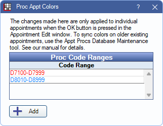

Proc Appt Colors
When the ProcsColored field is added to Appointment Views, procedures within a defined code range can show in a different text color.
In Appointment View Setup, click Proc Colors.
Click Add to create a new Proc Code Range or double-click an existing code range to edit.

- Code Range: Enter the procedure code range the text color to apply the text color.
- Text Color / Change: Select the color to apply.
- Show previous date (optional): Check to show the last date one of the procedures within the range was completed. The date (mm/yy) is always the most recent of any code in that range. To list the most recent date of a specific procedure code, add another range for a single procedure code.
Delete: Remove the Proc Code Range.
Click Save to finish creating a new Proc Code Range or keep changes to an existing Proc Code Range.
Note:
- Changes are reflected immediately when creating new appointments. For existing appointments, changes are reflected on an individual appointment when saving changes. The Appt Procs tool in Database Maintenance, Tools tab can be run to sync Proc Appt Colors for all existing appointments.
- Proc Colors can only be used in the Main List of an appointment and cannot display in the Upper-Right or Lower-Right areas.